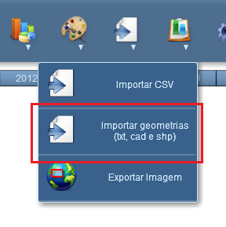
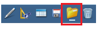
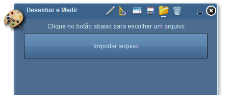
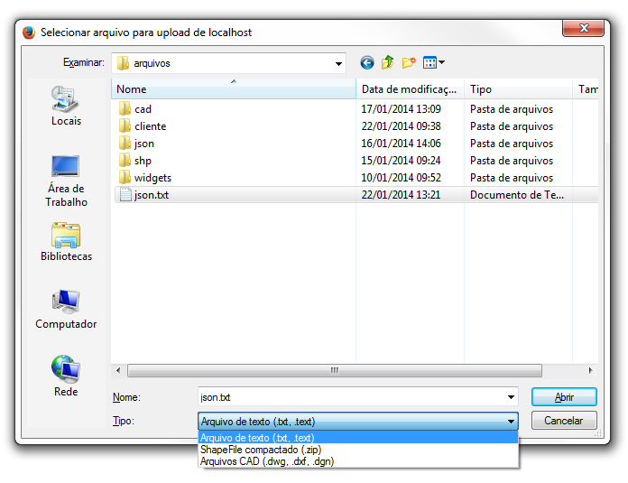
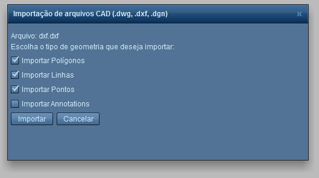
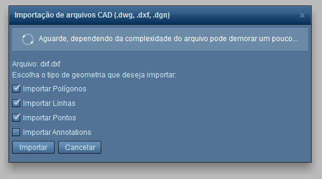

Importar geometrias (txt, cad e shp)
A ferramenta Desenhar e Medir possui a funcionalidade "Importar geometrias (txt, cad e shp)", que importa geometrias no formato ".txt", to tipo "cad" e "shapefile" (".shp") para o mapa atual.
Para usar a funcionalidade Importar geometrias (txt, cad e shp):
1a - Clique sobre o símbolo “Importar geometrias (txt, cad e shp)”;
I
1b - Ou clique na ferramenta Desenhar e Medir, clique no ícone "Abrir Camada de Gráficos Salva";

2 - Clique no botão Importar Arquivo;

3 - Uma janela se abrirá. No campo "Tipo", selecione o tipo de arquivo que deseja importar. Depois clique em "Abrir";

4 - Se for um arquivo do tipo "cad", marque os tipos de geometria que deseja importar. Depois clique em "Importar";

5 - Aguarde a importação da geometria;

6 - Após a importação, será exibida no mapa a geometria importada.